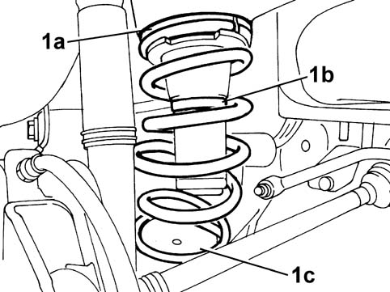

4420AA REAR SUSPENSION SPRINGS END OF TRAVEL BUFFER CHECK
- Path
- Test > 44 SUSPENSION AND WHEELS > 4420 REAR SUSPENSION > 4420A REAR DAMPERS AND SPRINGS > 4420AA REAR SUSPENSION SPRINGS END OF TRAVEL BUFFER CHECK
- Kind
- test / check procedure
- Applies to
- all engines; all production periods
- Interactive page
- https://sloeber94.github.io/elrnDB-fPnd/en/#/169001060
Applies to: all engines; all production periods
- Position the vehicle on a two column lift and raise it.
1. Check the state of the spring upper support (rubber) ring: it should not be worn or damaged.
2. Check that the upper spring reaction support is correctly fitted.
3. Check that the spring is correctly fitted.

Applies to: engines: 1.2 8v; all production periods; only with equipment: 4x4
- Position the vehicle on a two column lift and raise it.
1. Check the state of the spring upper support (rubber) ring (1a): it should not be worn or damaged. Check that the upper spring reaction support (1b) is correctly fitted. Check that the spring is correctly fitted in its housing (1c).